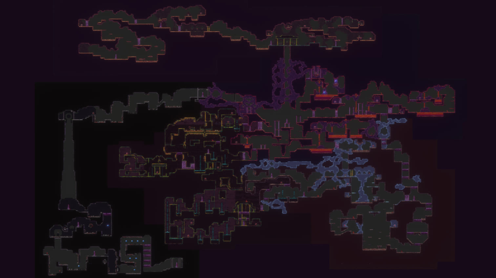

Trials of Aerlynn
Solo developer 2024
What I did
- Rebuilt the character controller from scratch in UE5 Blueprints, with six abilities.
- Designed six regions around ability-gated exploration, map first and mechanics second.
- Hand-placed every tile in Unreal Engine.
- Built an introductory zone that teaches each ability in isolation before combining them.
The game
Trials of Aerlynn is a 2D Metroidvania platformer built in Unreal Engine 5.4, created as a solo exploration of genre fundamentals and of responsive, satisfying movement. It has six distinct regions and a progression system centered on ability-gated exploration.
Character controller
The project began with rebuilding the character controller in UE5 Blueprints. The original template had inconsistent mechanics, particularly a slide that relied on position vectors rather than physics interactions. The rebuilt controller supports six core abilities:
- Super Tome: ranged spell attack
- Stone Breaker: downward slam attack
- Sliding Boots: ground movement boost
- Sticky Gloves: wall cling and climbing
- Seraph Amulet: double jump
- Slipstream Armor: air dash
Level design
The design philosophy was “World First, Systems Second”: map design came before mechanics, drawing inspiration from Hollow Knight. The original concept had three abilities and was titled “Caves of Chicago,” treating Chicago as a medieval fantasy realm. It grew into the current six regions.
Key systems include Pyres (collectible braziers that unlock doors), breakable walls and secret paths, a hazard respawn system, and Azure Beads that recharge the air dash.
Every tile was hand-placed, as Unreal lacks the automated tile-adaptation systems found in other engines. That constraint forced deliberate decisions about surface placement and movement readability.
Takeaways
Trials of Aerlynn is free on itch.io. Building a full Metroidvania solo in Unreal, an engine not typically used for 2D, proved that the fundamentals of level design transfer across any toolset. The hand-placement constraint became a strength: every tile is an intentional design choice.
Asset credits
- CharacterWoman Warrior by Dreamir
- TilesetsFantasy Winter, Ancient Temple, Fantasy Caves, Lava Caves by aamatniekss
- AudioJoel Francis Buford, Joel Steudler, DanielTelesOST
- VFXSmoke N Dust 2, Holy VFX by pimen
- UIShikashi, Kenney, ElvGames